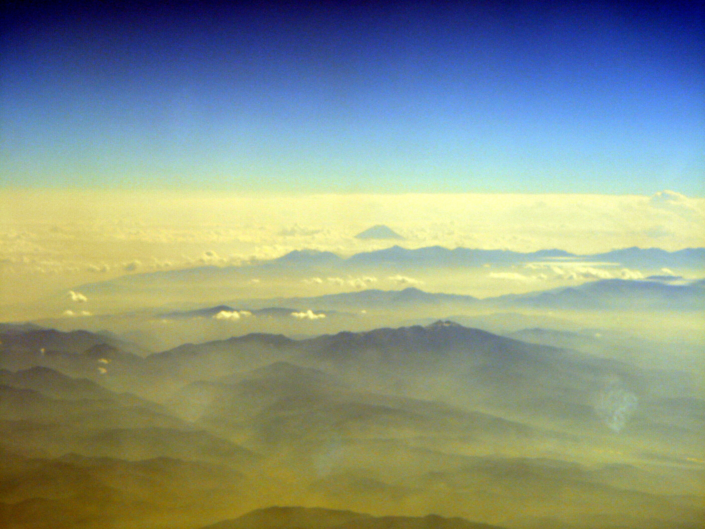

Perceber que está perdido é assustador, mas a resposta mais perigosa costuma ser a pressa. Em trilha, continuar descendo sem referência pode afastar você da rota, gastar energia e levar para terreno pior.
Pare antes de piorar
Interrompa a caminhada, respire e tire o grupo da área de risco imediato. Não deixe cada pessoa procurar um caminho diferente. Marque mentalmente ou no GPS o último ponto de certeza: placa, ponte, bifurcação, abrigo, córrego ou trecho reconhecível.
Pense, observe e planeje
Confira mapa offline, bússola, horário, bateria, água, comida, roupas e clima. Procure referências grandes: vale, crista, rio, estrada, linha de energia ou abrigo. Se a rota segura não estiver clara, não invente atalho. Atalho em montanha japonesa pode significar barranco, vegetação fechada ou rio.
Comunique cedo
Se houver sinal, envie localização, nome da trilha, número de pessoas, condição física e último ponto conhecido. Economize bateria: brilho baixo, modo avião quando não estiver comunicando e power bank separado. Um apito pode ser mais eficiente do que gritar até cansar.
Conserve calor e luz
Se a noite estiver chegando, priorize abrigo contra vento e chuva, roupa seca e visibilidade para resgate. Lanternas, manta térmica e camada extra são itens pequenos que mudam o tamanho do problema.
Antes de sair
Use este texto como orientação editorial, não como autorização automática para entrar em qualquer rota. Em trilhas no Japão, confirme previsão, acesso, fechamento de trilha, horário de transporte, condição física do grupo e regras locais no dia da saída.
Fontes consultadas
- Japan National Parks: rules, safety and disaster information
- Yakushima World Heritage Conservation Center: mountain equipment
Origem editorial: pauta do calendário Notion da Elevação, publicada no Japão Relativo em 14 de agosto de 2026.